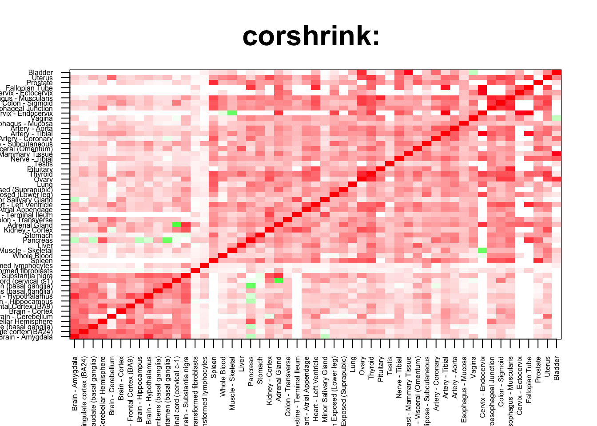
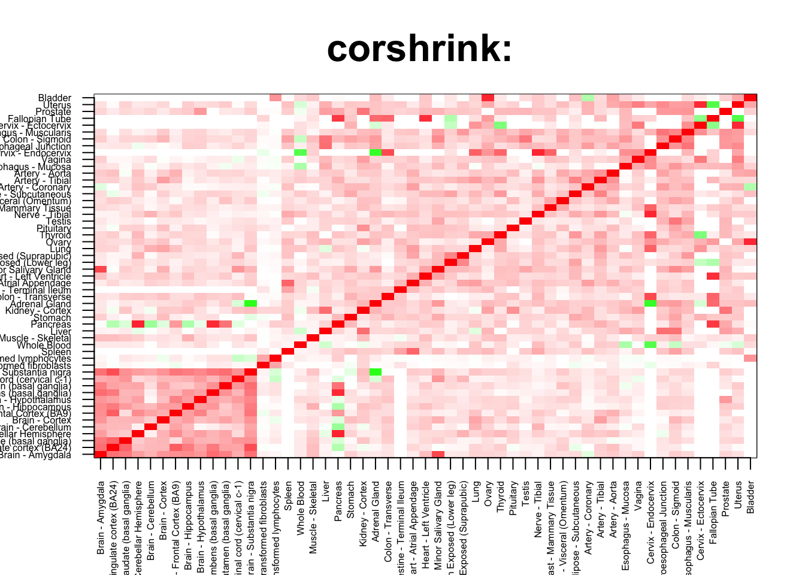
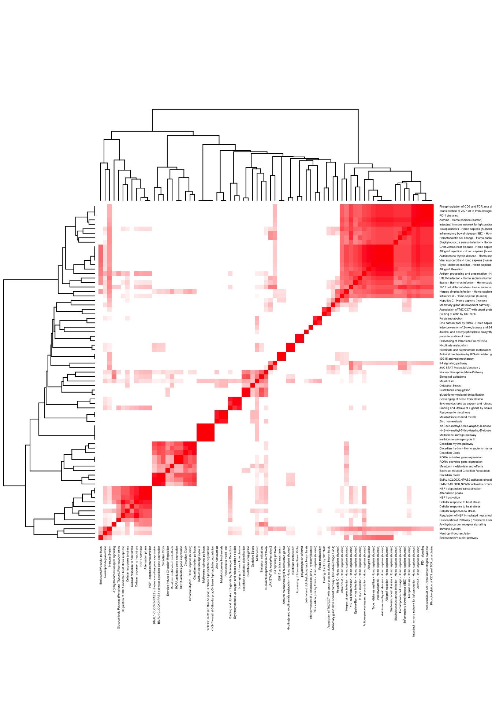
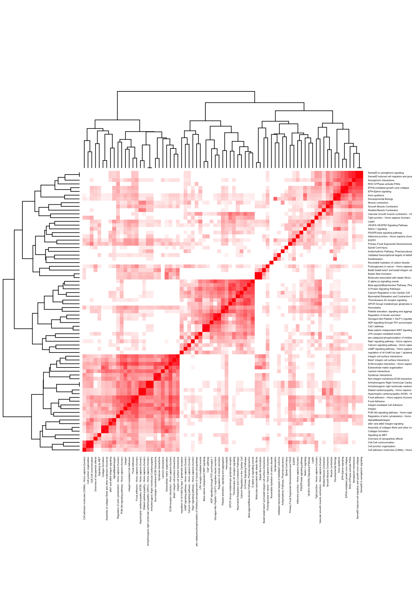
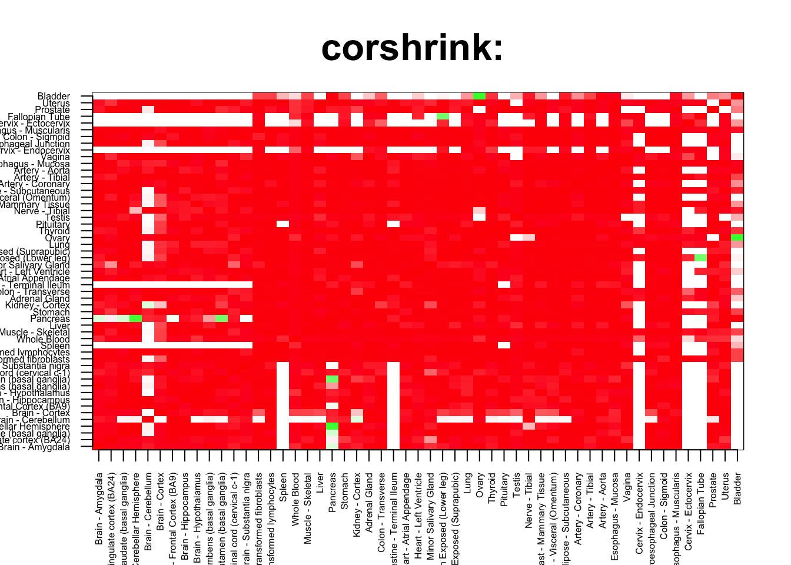
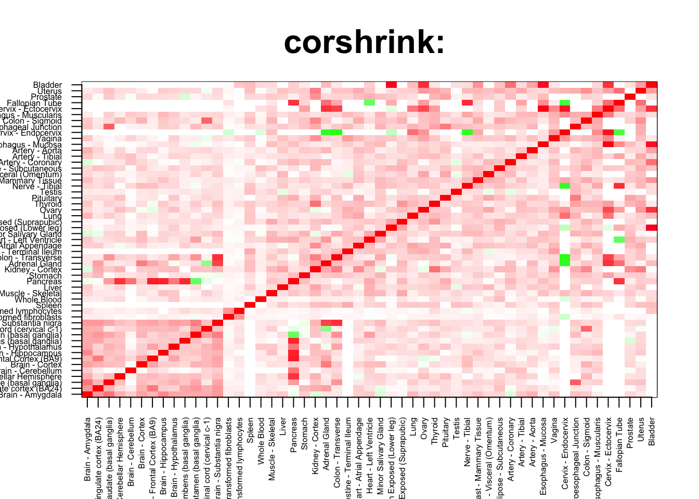
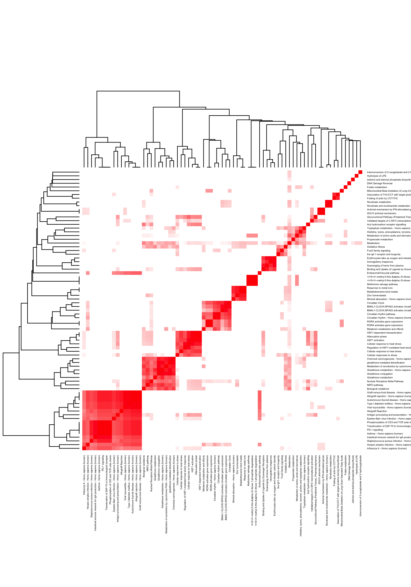
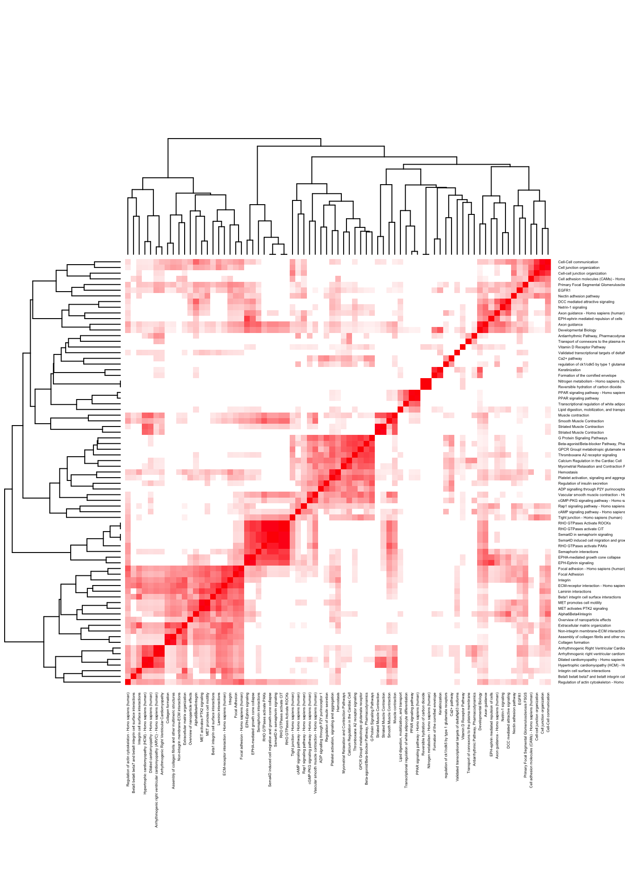

In this script, we check for the enrichment of genes for high/low correlation in the non-brain regions.
corshrink_data <- get(load("../output/genewide_ash_out_tissue_mat.rda"))
cor_data <- get(load("../output/cor_tissues_non_ash_voom_pearson.rda"))common_samples <- get(load("../output/common_samples.rda"))
tissue_labels <- read.table(file = "../data/GTEX_V6/samples_id.txt")[,3]
#library(data.table)
#data <- data.frame(fread("../data/GTEX_V6/cis_gene_expression.txt"))
#matdata <- t(data[,-c(1,2)])
gene_names <- as.character(read.table(file = "../data/GTEX_V6/gene_names_GTEX_V6.txt")[,1])
gene_names_1 <- as.character(sapply(gene_names, function(x) return(strsplit(x, "[.]")[[1]][1])))
U <- unique(tissue_labels)tab <- array(0, dim(corshrink_data)[3])
for(m in 1:dim(corshrink_data)[3]){
temp <- corshrink_data[order_index[-(1:13)], order_index[(1:13)],m]
temp1 <- corshrink_data[order_index[-(1:13)], order_index[-(1:13)],m]
temp_pooled <- c(c(temp), temp1[row(temp1) > col(temp1)])
tab[m] <- (quantile(temp_pooled, 0.7))
}
ordering_high <- order(tab, decreasing = TRUE)[1:1000]
ordering_low <- order(tab, decreasing = FALSE)[1:1000]top_gene <- gene_names_1[ordering_high[1]]
col=c(rev(rgb(seq(1,0,length=1000),1,seq(1,0,length=1000))),
rgb(1,seq(1,0,length=1000),seq(1,0,length=1000)))
image(as.matrix(corshrink_data[order_index,order_index, ordering_high[1000]]),
col=col, main=paste0("corshrink: "), cex.main=2,
xaxt = "n", yaxt = "n", zlim=c(-1,1))
axis(1, at = seq(0, 1, length.out = 53), labels = U[order_index], las=2, cex.axis = 0.5)
axis(2, at = seq(0, 1, length.out = 53), labels = U[order_index], las=2, cex.axis = 0.5)
bottom_gene <- gene_names_1[ordering_low[1]]
col=c(rev(rgb(seq(1,0,length=1000),1,seq(1,0,length=1000))),
rgb(1,seq(1,0,length=1000),seq(1,0,length=1000)))
image(as.matrix(corshrink_data[order_index,order_index, ordering_low[1000]]),
col=col, main=paste0("corshrink: "), cex.main=2,
xaxt = "n", yaxt = "n", zlim=c(-1,1))
axis(1, at = seq(0, 1, length.out = 53), labels = U[order_index], las=2, cex.axis = 0.5)
axis(2, at = seq(0, 1, length.out = 53), labels = U[order_index], las=2, cex.axis = 0.5)
high_non_brain_2_genes <- gene_names_1[ordering_high]
low_non_brain_2_genes <- gene_names_1[ordering_low]
write.table(cbind.data.frame(high_non_brain_2_genes), quote = FALSE, file = "../utilities/non_brain_2/high_non_brain.txt", row.names = FALSE, col.names = FALSE)
write.table(cbind.data.frame(low_non_brain_2_genes), quote = FALSE, file = "../utilities/non_brain_2/low_non_brain.txt", row.names = FALSE, col.names = FALSE)tab <- read.delim("../utilities/non_brain_2/pathway_high.tab")
head(cbind.data.frame(tab$pathway, tab$q.value), 100)## tab$pathway
## 1 Herpes simplex infection - Homo sapiens (human)
## 2 BMAL1:CLOCK,NPAS2 activates circadian gene expression
## 3 HSF1 activation
## 4 Antigen processing and presentation - Homo sapiens (human)
## 5 Type I diabetes mellitus - Homo sapiens (human)
## 6 Circadian Clock
## 7 Allograft rejection - Homo sapiens (human)
## 8 Attenuation phase
## 9 Graft-versus-host disease - Homo sapiens (human)
## 10 BMAL1-CLOCK,NPAS2 activates circadian gene expression
## 11 Allograft Rejection
## 12 Staphylococcus aureus infection - Homo sapiens (human)
## 13 glutathione-mediated detoxification
## 14 Cellular response to heat stress
## 15 HSF1-dependent transactivation
## 16 Influenza A - Homo sapiens (human)
## 17 Autoimmune thyroid disease - Homo sapiens (human)
## 18 Inflammatory bowel disease (IBD) - Homo sapiens (human)
## 19 Folate metabolism
## 20 Viral myocarditis - Homo sapiens (human)
## 21 Nuclear Receptors Meta-Pathway
## 22 Th17 cell differentiation - Homo sapiens (human)
## 23 Epstein-Barr virus infection - Homo sapiens (human)
## 24 <i>S</i>-methyl-5-thio-α-D-ribose 1-phosphate degradation
## 25 <i>S</i>-methyl-5-thio-α-D-ribose 1-phosphate degradation
## 26 Regulation of HSF1-mediated heat shock response
## 27 Nicotinate and nicotinamide metabolism - Homo sapiens (human)
## 28 Immune System
## 29 Metabolism
## 30 Cellular responses to stress
## 31 Asthma - Homo sapiens (human)
## 32 Neutrophil degranulation
## 33 RORA activates gene expression
## 34 Metallothioneins bind metals
## 35 Response to metal ions
## 36 Scavenging of heme from plasma
## 37 Translocation of ZAP-70 to Immunological synapse
## 38 Nicotinate metabolism
## 39 Intestinal immune network for IgA production - Homo sapiens (human)
## 40 Endosomal/Vacuolar pathway
## 41 Methionine salvage pathway
## 42 Hematopoietic cell lineage - Homo sapiens (human)
## 43 JAK STAT MolecularVariation 2
## 44 HTLV-I infection - Homo sapiens (human)
## 45 Zinc homeostasis
## 46 Phosphorylation of CD3 and TCR zeta chains
## 47 Biological oxidations
## 48 il 4 signaling pathway
## 49 Aryl hydrocarbon receptor signalling
## 50 PD-1 signaling
## 51 Glutathione conjugation
## 52 Cellular response to heat stress
## 53 Circadian rhythm pathway
## 54 Binding and Uptake of Ligands by Scavenger Receptors
## 55 Association of TriC/CCT with target proteins during biosynthesis
## 56 Melatonin metabolism and effects
## 57 Circadian rhythm - Homo sapiens (human)
## 58 Oxidative Stress
## 59 Erythrocytes take up oxygen and release carbon dioxide
## 60 Glucocorticoid Pathway (Peripheral Tissue), Pharmacodynamics
## 61 Hepatitis C - Homo sapiens (human)
## 62 ISG15 antiviral mechanism
## 63 Antiviral mechanism by IFN-stimulated genes
## 64 One carbon pool by folate - Homo sapiens (human)
## 65 Processing of Intronless Pre-mRNAs
## 66 Toxoplasmosis - Homo sapiens (human)
## 67 dolichol and dolichyl phosphate biosynthesis
## 68 Interconversion of 2-oxoglutarate and 2-hydroxyglutarate
## 69 RORA activates gene expression
## 70 Circadian Clock
## 71 Mammary gland development pathway - Involution (Stage 4 of 4)
## 72 Folding of actin by CCT/TriC
## 73 polyadenylation of mrna
## 74 methionine salvage cycle III
## 75 Exercise-induced Circadian Regulation
## 76 Chemical carcinogenesis - Homo sapiens (human)
## 77 Oncostatin M Signaling Pathway
## 78 Folate Metabolism
## 79 NRF2 pathway
## 80 Leukotriene metabolism
## 81 apoptotic dna-fragmentation and tissue homeostasis
## 82 The role of GTSE1 in G2/M progression after G2 checkpoint
## 83 Nicotinamide salvaging
## 84 Generation of second messenger molecules
## 85 Phase II conjugation
## 86 Mineral absorption - Homo sapiens (human)
## 87 Apoptosis-related network due to altered Notch3 in ovarian cancer
## 88 Tetrahydrobiopterin (BH4) synthesis, recycling, salvage and regulation
## 89 Butyrophilin (BTN) family interactions
## 90 IL-4 Signaling Pathway
## 91 Antigen Presentation: Folding, assembly and peptide loading of class I MHC
## 92 PTK6 Activates STAT3
## 93 NAD salvage
## 94 Leishmaniasis - Homo sapiens (human)
## 95 Legionellosis - Homo sapiens (human)
## 96 RIG-I/MDA5 mediated induction of IFN-alpha/beta pathways
## 97 Gamma carboxylation, hypusine formation and arylsulfatase activation
## 98 Metabolism of xenobiotics by cytochrome P450 - Homo sapiens (human)
## 99 Systemic lupus erythematosus - Homo sapiens (human)
## 100 Th1 and Th2 cell differentiation - Homo sapiens (human)
## tab$q.value
## 1 5.481205e-06
## 2 9.384376e-06
## 3 4.687960e-05
## 4 4.687960e-05
## 5 7.411158e-05
## 6 1.241553e-04
## 7 1.370053e-04
## 8 1.731413e-04
## 9 2.166019e-04
## 10 2.646918e-04
## 11 3.314670e-04
## 12 3.314670e-04
## 13 3.314670e-04
## 14 5.382001e-04
## 15 6.757541e-04
## 16 1.060547e-03
## 17 1.079470e-03
## 18 1.079470e-03
## 19 1.441996e-03
## 20 2.377348e-03
## 21 2.970290e-03
## 22 3.422510e-03
## 23 4.054279e-03
## 24 4.188488e-03
## 25 4.188488e-03
## 26 5.163004e-03
## 27 6.558751e-03
## 28 6.821177e-03
## 29 6.880699e-03
## 30 6.965114e-03
## 31 6.965114e-03
## 32 7.614527e-03
## 33 7.759094e-03
## 34 8.911726e-03
## 35 8.911726e-03
## 36 8.911726e-03
## 37 1.043876e-02
## 38 1.043876e-02
## 39 1.120451e-02
## 40 1.131712e-02
## 41 1.221723e-02
## 42 1.298945e-02
## 43 1.496355e-02
## 44 1.535613e-02
## 45 1.578949e-02
## 46 1.617839e-02
## 47 1.718195e-02
## 48 1.718195e-02
## 49 1.749905e-02
## 50 1.798754e-02
## 51 1.860741e-02
## 52 1.980292e-02
## 53 1.980292e-02
## 54 1.980292e-02
## 55 1.980292e-02
## 56 2.696759e-02
## 57 3.050066e-02
## 58 3.050066e-02
## 59 3.268277e-02
## 60 3.268277e-02
## 61 3.268277e-02
## 62 3.268277e-02
## 63 3.268277e-02
## 64 3.718985e-02
## 65 3.718985e-02
## 66 3.718985e-02
## 67 3.718985e-02
## 68 3.718985e-02
## 69 3.718985e-02
## 70 3.718985e-02
## 71 3.718985e-02
## 72 3.718985e-02
## 73 3.718985e-02
## 74 3.718985e-02
## 75 3.811042e-02
## 76 3.896564e-02
## 77 3.995911e-02
## 78 4.251999e-02
## 79 4.251999e-02
## 80 4.392758e-02
## 81 4.460192e-02
## 82 4.460192e-02
## 83 4.460192e-02
## 84 4.822587e-02
## 85 4.997347e-02
## 86 4.997347e-02
## 87 5.425848e-02
## 88 5.425848e-02
## 89 5.425848e-02
## 90 5.533244e-02
## 91 5.533244e-02
## 92 5.533244e-02
## 93 5.533244e-02
## 94 5.533244e-02
## 95 5.533244e-02
## 96 5.533244e-02
## 97 5.533244e-02
## 98 5.533244e-02
## 99 5.533244e-02
## 100 5.533244e-02pathway2 <- read.delim("../utilities/non_brain_2/pathway_high.tab")
maxpath = 75
pathway <- pathway2[1:min(maxpath, dim(pathway2)[1]), ]
ensembl_genes <- pathway$members_input_overlap
pathway_list_genes <- sapply(ensembl_genes, function(x) return(strsplit(as.character(x), "; ")))
all_genes <- Reduce(union, pathway_list_genes)
pathway_mat <- matrix(0, length(pathway_list_genes), length(all_genes))
for(l in 1:dim(pathway_mat)[1]){
pathway_mat[l, match(pathway_list_genes[[l]], all_genes)] <- 1
}
pathway_bimat <- (pathway_mat)%*%t(pathway_mat)
pathway_bimat_prop <- diag(1/sqrt(diag(pathway_bimat)), dim(pathway_bimat)[1]) %*% pathway_bimat %*% diag(1/sqrt(diag(pathway_bimat)), dim(pathway_bimat)[1])
col=c(rev(rgb(seq(1,0,length=1000),1,seq(1,0,length=1000))),
rgb(1,seq(1,0,length=1000),seq(1,0,length=1000)))
heatmap(pathway_bimat_prop, labRow = pathway$pathway, labCol = pathway$pathway, cexRow = 0.3, cexCol = 0.3, col = col, zlim = c(-1,1),
scale = "none", margins = c(5, 5))
tab <- read.delim("../utilities/non_brain_2/GO_high.tab")
head(cbind.data.frame(tab$term_name, tab$q.value), 100)## tab$term_name
## 1 type I interferon signaling pathway
## 2 response to type I interferon
## 3 MHC protein complex
## 4 interferon-gamma-mediated signaling pathway
## 5 response to cytokine
## 6 cellular response to cytokine stimulus
## 7 cytokine-mediated signaling pathway
## 8 response to interferon-gamma
## 9 lumenal side of endoplasmic reticulum membrane
## 10 integral component of lumenal side of endoplasmic reticulum membrane
## 11 peptide antigen binding
## 12 innate immune response
## 13 intracellular membrane-bounded organelle
## 14 response to biotic stimulus
## 15 response to virus
## 16 response to external biotic stimulus
## 17 response to other organism
## 18 response to stress
## 19 MHC class II protein complex
## 20 xenobiotic catabolic process
## 21 transferase activity, transferring one-carbon groups
## 22 RAGE receptor binding
## 23 methyltransferase activity
## 24 cytoplasmic part
## 25 response to temperature stimulus
## 26 hemoglobin complex
## 27 defense response
## 28 defense response to other organism
## 29 adaptive immune response based on somatic recombination of immune receptors built from immunoglobulin superfamily domains
## 30 cellular detoxification of nitrogen compound
## 31 haptoglobin binding
## 32 membrane-bounded organelle
## 33 response to heat
## 34 nitrogen compound metabolic process
## 35 amide binding
## 36 defense response to virus
## 37 aspartate family amino acid metabolic process
## 38 immune effector process
## 39 oxygen transporter activity
## 40 cytokine production
## 41 ER to Golgi transport vesicle membrane
## 42 alpha-amino acid metabolic process
## 43 cellular detoxification
## 44 cellular modified amino acid metabolic process
## 45 protein folding
## 46 antigen binding
## 47 interferon-gamma production
## 48 negative regulation of viral process
## 49 nitrobenzene metabolic process
## 50 haptoglobin-hemoglobin complex
## 51 peptidyl-lysine 5-dioxygenase activity
## 52 endocytic vesicle lumen
## 53 female gamete generation
## 54 oxygen binding
## 55 negative regulation of multi-organism process
## 56 T cell mediated immunity
## 57 immune response
## 58 intracellular organelle
## 59 viral genome replication
## 60 gas transport
## 61 unfolded protein binding
## 62 MHC class II receptor activity
## 63 MHC class I protein complex
## 64 alpha-amino acid biosynthetic process
## 65 intracellular
## 66 detoxification of nitrogen compound
## 67 purine deoxyribonucleotide binding
## 68 carboxylic acid metabolic process
## 69 viral process
## 70 multi-organism cellular process
## 71 circadian rhythm
## 72 cytokine production involved in immune response
## 73 symbiosis, encompassing mutualism through parasitism
## 74 intracellular part
## 75 interspecies interaction between organisms
## 76 cellular response to heat
## 77 coenzyme metabolic process
## 78 glutathione derivative metabolic process
## 79 glutathione derivative biosynthetic process
## 80 cellular aromatic compound metabolic process
## 81 lymphocyte mediated immunity
## 82 deoxyribonucleotide binding
## 83 cellular nitrogen compound metabolic process
## 84 peptide binding
## 85 glutathione transferase activity
## 86 regulation of cytokine production
## 87 regulation of interferon-gamma production
## 88 response to organic substance
## 89 WASH complex
## 90 adenylyltransferase activity
## 91 chromatin DNA binding
## 92 chaperone-mediated protein folding
## 93 positive regulation of cytokine production
## 94 methylation
## 95 cytosol
## 96 response to toxic substance
## 97 adaptive immune response
## 98 coenzyme biosynthetic process
## 99 interleukin-1 receptor activity
## 100 follicular dendritic cell activation
## tab$q.value
## 1 1.280757e-08
## 2 1.531458e-08
## 3 3.195756e-07
## 4 8.980218e-07
## 5 1.131090e-05
## 6 4.753887e-06
## 7 1.131090e-05
## 8 8.879376e-06
## 9 1.330252e-05
## 10 5.392915e-06
## 11 2.696259e-05
## 12 4.134094e-04
## 13 8.089624e-05
## 14 1.436705e-04
## 15 1.630608e-04
## 16 4.134094e-04
## 17 4.965407e-04
## 18 1.436705e-04
## 19 1.060624e-04
## 20 9.333806e-04
## 21 4.222890e-04
## 22 7.267357e-04
## 23 7.267357e-04
## 24 4.668856e-04
## 25 1.725702e-03
## 26 4.668856e-04
## 27 1.725702e-03
## 28 2.529930e-03
## 29 2.529930e-03
## 30 1.859931e-03
## 31 1.095379e-03
## 32 1.926020e-03
## 33 1.859931e-03
## 34 9.547538e-04
## 35 1.511668e-03
## 36 1.889435e-03
## 37 3.023490e-03
## 38 9.547538e-04
## 39 1.192773e-03
## 40 1.968617e-03
## 41 2.140200e-03
## 42 4.483256e-03
## 43 9.659115e-04
## 44 2.395876e-03
## 45 9.659115e-04
## 46 1.553105e-03
## 47 6.165461e-03
## 48 6.122375e-03
## 49 4.006445e-03
## 50 2.416931e-03
## 51 9.580629e-03
## 52 1.737994e-03
## 53 8.004469e-03
## 54 1.718837e-03
## 55 8.004469e-03
## 56 8.425775e-03
## 57 1.880617e-03
## 58 4.989356e-03
## 59 1.037603e-02
## 60 1.143865e-02
## 61 5.330911e-03
## 62 8.845159e-03
## 63 2.633742e-03
## 64 1.372399e-02
## 65 5.860582e-03
## 66 3.182859e-03
## 67 8.845159e-03
## 68 1.372399e-02
## 69 9.072604e-03
## 70 3.182859e-03
## 71 3.182859e-03
## 72 1.037507e-02
## 73 1.037507e-02
## 74 6.637116e-03
## 75 3.459988e-03
## 76 1.921919e-02
## 77 1.921919e-02
## 78 1.088327e-02
## 79 1.921919e-02
## 80 1.088327e-02
## 81 1.953528e-02
## 82 9.664653e-03
## 83 1.289177e-02
## 84 9.664653e-03
## 85 1.555836e-02
## 86 2.308349e-02
## 87 2.876226e-02
## 88 1.344112e-02
## 89 1.221672e-02
## 90 2.024723e-02
## 91 1.556204e-02
## 92 1.508164e-02
## 93 3.233357e-02
## 94 6.026253e-03
## 95 2.049433e-02
## 96 1.530725e-02
## 97 1.530725e-02
## 98 3.420784e-02
## 99 2.024723e-02
## 100 2.908005e-02tab <- read.delim("../utilities/non_brain_2/pathway_low.tab")
head(cbind.data.frame(tab$pathway, tab$q.value), 100)## tab$pathway
## 1 Myometrial Relaxation and Contraction Pathways
## 2 Smooth Muscle Contraction
## 3 Integrin
## 4 Extracellular matrix organization
## 5 Dilated cardiomyopathy - Homo sapiens (human)
## 6 Vascular smooth muscle contraction - Homo sapiens (human)
## 7 Muscle contraction
## 8 Developmental Biology
## 9 Calcium Regulation in the Cardiac Cell
## 10 Hypertrophic cardiomyopathy (HCM) - Homo sapiens (human)
## 11 Arrhythmogenic right ventricular cardiomyopathy (ARVC) - Homo sapiens (human)
## 12 Focal adhesion - Homo sapiens (human)
## 13 Primary Focal Segmental Glomerulosclerosis FSGS
## 14 Arrhythmogenic Right Ventricular Cardiomyopathy
## 15 Striated Muscle Contraction
## 16 Focal Adhesion
## 17 Regulation of actin cytoskeleton - Homo sapiens (human)
## 18 Non-integrin membrane-ECM interactions
## 19 G Protein Signaling Pathways
## 20 Beta-agonist/Beta-blocker Pathway, Pharmacodynamics
## 21 Tight junction - Homo sapiens (human)
## 22 Beta1 integrin cell surface interactions
## 23 Antiarrhythmic Pathway, Pharmacodynamics
## 24 Thromboxane A2 receptor signaling
## 25 Proteoglycans in cancer - Homo sapiens (human)
## 26 PDGFR-beta signaling pathway
## 27 Axon guidance
## 28 Cell-Cell communication
## 29 Netrin-1 signaling
## 30 Syndecan interactions
## 31 Platelet activation, signaling and aggregation
## 32 Hemostasis
## 33 Keratinization
## 34 Integrin cell surface interactions
## 35 Semaphorin interactions
## 36 ECM-receptor interaction - Homo sapiens (human)
## 37 EGFR1
## 38 EPHA-mediated growth cone collapse
## 39 Sema4D induced cell migration and growth-cone collapse
## 40 a6b1 and a6b4 Integrin signaling
## 41 Alpha6Beta4Integrin
## 42 Spinal Cord Injury
## 43 Cell junction organization
## 44 Elastic fibre formation
## 45 Validated transcriptional targets of deltaNp63 isoforms
## 46 Beta5 beta6 beta7 and beta8 integrin cell surface interactions
## 47 Rap1 signaling pathway - Homo sapiens (human)
## 48 Sema4D in semaphorin signaling
## 49 EPH-Ephrin signaling
## 50 Cell adhesion molecules (CAMs) - Homo sapiens (human)
## 51 GPCR GroupI metabotropic glutamate receptor
## 52 Beta-catenin independent WNT signaling
## 53 Overview of nanoparticle effects
## 54 Molecules associated with elastic fibres
## 55 Ca2+ pathway
## 56 Regulation of insulin secretion
## 57 Integrin-mediated Cell Adhesion
## 58 Reversible hydration of carbon dioxide
## 59 pkc-catalyzed phosphorylation of inhibitory phosphoprotein of myosin phosphatase
## 60 Adherens junction - Homo sapiens (human)
## 61 VEGFA-VEGFR2 Signaling Pathway
## 62 PI3K-Akt signaling pathway - Homo sapiens (human)
## 63 Laminin interactions
## 64 RHO GTPases activate PAKs
## 65 Signaling by MET
## 66 Collagen formation
## 67 cAMP signaling pathway - Homo sapiens (human)
## 68 Calcium signaling pathway - Homo sapiens (human)
## 69 Glucagon-like Peptide-1 (GLP1) regulates insulin secretion
## 70 Leptin
## 71 Assembly of collagen fibrils and other multimeric structures
## 72 G alpha (z) signalling events
## 73 ADP signalling through P2Y purinoceptor 1
## 74 regulation of ck1/cdk5 by type 1 glutamate receptors
## 75 LPA receptor mediated events
## 76 Transport of connexons to the plasma membrane
## 77 alanine biosynthesis/degradation
## 78 Gastrin-CREB signalling pathway via PKC and MAPK
## 79 Hypothesized Pathways in Pathogenesis of Cardiovascular Disease
## 80 cGMP-PKG signaling pathway - Homo sapiens (human)
## 81 Transcriptional regulation of white adipocyte differentiation
## 82 DCC mediated attractive signaling
## 83 A tetrasaccharide linker sequence is required for GAG synthesis
## 84 Inflammatory mediator regulation of TRP channels - Homo sapiens (human)
## 85 G alpha (q) signalling events
## 86 Posttranslational regulation of adherens junction stability and dissassembly
## 87 Intracellular Signalling Through Prostacyclin Receptor and Prostacyclin
## 88 visceral fat deposits and the metabolic syndrome
## 89 Axon guidance - Homo sapiens (human)
## 90 Focal Adhesion-PI3K-Akt-mTOR-signaling pathway
## 91 Nitrogen metabolism - Homo sapiens (human)
## 92 NOTCH1 regulation of human endothelial cell calcification
## 93 RHO GTPases activate CIT
## 94 RHO GTPases Activate ROCKs
## 95 ECM proteoglycans
## 96 Validated transcriptional targets of TAp63 isoforms
## 97 Role of Calcineurin-dependent NFAT signaling in lymphocytes
## 98 Simplified Interaction Map Between LOXL4 and Oxidative Stress Pathway
## 99 cGMP effects
## 100 TarBasePathway
## tab$q.value
## 1 2.949602e-08
## 2 4.289361e-06
## 3 4.579558e-06
## 4 4.579558e-06
## 5 4.978861e-06
## 6 1.174816e-05
## 7 1.290630e-05
## 8 2.792753e-05
## 9 4.107329e-05
## 10 4.392564e-05
## 11 4.630134e-05
## 12 4.630134e-05
## 13 4.630134e-05
## 14 5.065597e-05
## 15 1.979685e-04
## 16 2.457130e-04
## 17 3.739556e-04
## 18 4.026001e-04
## 19 4.499549e-04
## 20 4.499549e-04
## 21 4.570827e-04
## 22 4.570827e-04
## 23 4.570827e-04
## 24 4.991866e-04
## 25 4.991866e-04
## 26 5.928851e-04
## 27 6.406148e-04
## 28 7.328985e-04
## 29 7.756054e-04
## 30 1.161578e-03
## 31 1.559488e-03
## 32 1.590247e-03
## 33 1.651712e-03
## 34 1.805534e-03
## 35 1.805534e-03
## 36 2.054510e-03
## 37 2.169247e-03
## 38 2.781533e-03
## 39 2.781533e-03
## 40 2.856248e-03
## 41 2.856248e-03
## 42 2.856248e-03
## 43 2.929046e-03
## 44 2.929046e-03
## 45 3.072488e-03
## 46 4.054330e-03
## 47 4.477868e-03
## 48 4.579860e-03
## 49 4.778351e-03
## 50 5.122232e-03
## 51 5.338626e-03
## 52 5.458382e-03
## 53 6.269790e-03
## 54 7.525736e-03
## 55 7.777168e-03
## 56 8.523373e-03
## 57 8.533373e-03
## 58 9.055946e-03
## 59 9.346491e-03
## 60 9.839226e-03
## 61 1.270835e-02
## 62 1.288618e-02
## 63 1.345709e-02
## 64 1.345709e-02
## 65 1.345709e-02
## 66 1.364298e-02
## 67 1.366326e-02
## 68 1.366326e-02
## 69 1.367932e-02
## 70 1.367932e-02
## 71 1.367932e-02
## 72 1.367932e-02
## 73 1.437557e-02
## 74 1.437557e-02
## 75 1.612108e-02
## 76 1.635063e-02
## 77 1.635063e-02
## 78 1.635063e-02
## 79 1.635063e-02
## 80 1.635063e-02
## 81 1.635883e-02
## 82 1.635883e-02
## 83 1.881349e-02
## 84 1.898461e-02
## 85 2.089170e-02
## 86 2.089170e-02
## 87 2.295117e-02
## 88 2.295117e-02
## 89 2.295117e-02
## 90 2.356619e-02
## 91 2.356619e-02
## 92 2.356619e-02
## 93 2.356619e-02
## 94 2.356619e-02
## 95 2.356619e-02
## 96 2.521939e-02
## 97 2.521939e-02
## 98 2.521939e-02
## 99 2.521939e-02
## 100 2.521939e-02pathway2 <- read.delim("../utilities/non_brain_2/pathway_low.tab")
maxpath = 75
pathway <- pathway2[1:min(maxpath, dim(pathway2)[1]), ]
ensembl_genes <- pathway$members_input_overlap
pathway_list_genes <- sapply(ensembl_genes, function(x) return(strsplit(as.character(x), "; ")))
all_genes <- Reduce(union, pathway_list_genes)
pathway_mat <- matrix(0, length(pathway_list_genes), length(all_genes))
for(l in 1:dim(pathway_mat)[1]){
pathway_mat[l, match(pathway_list_genes[[l]], all_genes)] <- 1
}
pathway_bimat <- (pathway_mat)%*%t(pathway_mat)
pathway_bimat_prop <- diag(1/sqrt(diag(pathway_bimat)), dim(pathway_bimat)[1]) %*% pathway_bimat %*% diag(1/sqrt(diag(pathway_bimat)), dim(pathway_bimat)[1])
col=c(rev(rgb(seq(1,0,length=1000),1,seq(1,0,length=1000))),
rgb(1,seq(1,0,length=1000),seq(1,0,length=1000)))
heatmap(pathway_bimat_prop, labRow = pathway$pathway, labCol = pathway$pathway, cexRow = 0.3, cexCol = 0.3, col = col, zlim = c(-1,1),
scale = "none", margins = c(5, 5))
tab <- read.delim("../utilities/non_brain_2/GO_low.tab")
head(cbind.data.frame(tab$term_name, tab$q.value), 100)## tab$term_name tab$q.value
## 1 anatomical structure morphogenesis 1.898854e-16
## 2 cytoskeletal protein binding 2.876203e-16
## 3 anatomical structure development 5.748245e-16
## 4 single-organism developmental process 2.309751e-15
## 5 actin cytoskeleton 4.241700e-15
## 6 system development 3.729135e-14
## 7 tissue development 3.729135e-14
## 8 muscle system process 6.989492e-14
## 9 contractile fiber 1.574454e-13
## 10 single-organism cellular process 5.345930e-14
## 11 contractile fiber part 3.794748e-13
## 12 muscle contraction 4.796283e-12
## 13 cellular developmental process 1.045961e-12
## 14 cell differentiation 4.796283e-12
## 15 single-multicellular organism process 2.937978e-13
## 16 cell periphery 6.203294e-13
## 17 actin filament-based process 1.482477e-12
## 18 cell development 1.482477e-12
## 19 multicellular organism development 1.847240e-12
## 20 regulation of localization 1.953611e-12
## 21 movement of cell or subcellular component 1.990826e-12
## 22 regulation of multicellular organismal process 3.808835e-12
## 23 actin binding 1.363533e-11
## 24 vesicle 1.291456e-11
## 25 plasma membrane 6.656335e-12
## 26 myofibril 7.453870e-12
## 27 animal organ development 2.810216e-11
## 28 regulation of cell communication 2.175511e-10
## 29 I band 8.847043e-11
## 30 regulation of cell projection organization 1.190815e-09
## 31 cell adhesion 3.863899e-11
## 32 muscle structure development 9.842962e-11
## 33 regulation of signaling 1.069046e-10
## 34 positive regulation of cell differentiation 1.190815e-09
## 35 sarcomere 1.778861e-10
## 36 supramolecular polymer 1.093677e-10
## 37 neuron part 1.093677e-10
## 38 cytoskeleton organization 1.886847e-09
## 39 plasma membrane part 1.093677e-10
## 40 cell-cell junction 1.093677e-10
## 41 extracellular exosome 6.515118e-10
## 42 anchoring junction 1.104703e-10
## 43 cell projection 1.104703e-10
## 44 neuron projection 4.041399e-10
## 45 single organism signaling 1.612517e-10
## 46 cell communication 1.612517e-10
## 47 extracellular vesicle 4.041399e-10
## 48 extracellular organelle 1.197303e-10
## 49 regulation of developmental process 5.198150e-10
## 50 regulation of cellular component movement 2.874676e-09
## 51 regulation of cell development 3.960657e-09
## 52 cell motility 1.647913e-10
## 53 localization of cell 1.647913e-10
## 54 regulation of nervous system development 3.960657e-09
## 55 protein binding 1.397466e-09
## 56 regulation of multicellular organismal development 4.470488e-09
## 57 cell migration 1.019304e-09
## 58 supramolecular fiber 7.571053e-10
## 59 Z disc 7.571053e-10
## 60 actin cytoskeleton organization 4.470488e-09
## 61 plasma membrane region 3.192181e-10
## 62 regulation of cell differentiation 4.470488e-09
## 63 regulation of cell motility 4.470488e-09
## 64 regulation of locomotion 1.578226e-09
## 65 adherens junction 1.899234e-09
## 66 extracellular matrix organization 9.414166e-09
## 67 extracellular structure organization 3.325840e-09
## 68 neurogenesis 2.044035e-08
## 69 regulation of cell morphogenesis 2.045797e-08
## 70 regulation of cellular component organization 1.363722e-08
## 71 cellular component morphogenesis 5.345335e-09
## 72 cell junction organization 5.345335e-09
## 73 positive regulation of developmental process 1.634621e-08
## 74 intracellular signal transduction 7.404768e-09
## 75 protein complex binding 2.643693e-08
## 76 regulation of system process 3.138324e-08
## 77 regulation of signal transduction 5.939935e-08
## 78 nervous system development 8.014948e-08
## 79 enzyme linked receptor protein signaling pathway 8.014948e-08
## 80 cell projection organization 3.446491e-08
## 81 cytoplasm 2.820736e-08
## 82 tissue morphogenesis 4.748665e-08
## 83 cell surface receptor signaling pathway 5.444826e-08
## 84 structural constituent of muscle 6.134090e-08
## 85 response to endogenous stimulus 2.604949e-08
## 86 positive regulation of locomotion 1.670499e-07
## 87 positive regulation of cellular component movement 3.890937e-07
## 88 cytoskeleton 1.841439e-07
## 89 neuron differentiation 3.890937e-07
## 90 signal transduction 4.437362e-08
## 91 regulation of transport 2.645990e-07
## 92 positive regulation of multicellular organismal process 2.794090e-07
## 93 cell junction assembly 3.275362e-07
## 94 somatodendritic compartment 1.093910e-07
## 95 cell leading edge 5.308825e-08
## 96 actomyosin 2.788133e-07
## 97 cell morphogenesis 3.529319e-07
## 98 neuron projection development 3.556536e-07
## 99 regulation of intracellular signal transduction 8.571695e-07
## 100 cell-cell adhesion 3.111715e-07tab <- array(0, dim(corshrink_data)[3])
for(m in 1:dim(corshrink_data)[3]){
temp1 <- corshrink_data[order_index[-(1:13)], order_index[-(1:13)],m]
temp_pooled <- c(temp1[row(temp1) > col(temp1)])
tab[m] <- (quantile(temp_pooled, 0.7))
}
ordering_high <- order(tab, decreasing = TRUE)[1:1000]
ordering_low <- order(tab, decreasing = FALSE)[1:1000]top_gene <- gene_names_1[ordering_high[1]]
col=c(rev(rgb(seq(1,0,length=1000),1,seq(1,0,length=1000))),
rgb(1,seq(1,0,length=1000),seq(1,0,length=1000)))
image(as.matrix(corshrink_data[order_index,order_index, ordering_high[1]]),
col=col, main=paste0("corshrink: "), cex.main=2,
xaxt = "n", yaxt = "n", zlim=c(-1,1))
axis(1, at = seq(0, 1, length.out = 53), labels = U[order_index], las=2, cex.axis = 0.5)
axis(2, at = seq(0, 1, length.out = 53), labels = U[order_index], las=2, cex.axis = 0.5)
bottom_gene <- gene_names_1[ordering_low[1]]
col=c(rev(rgb(seq(1,0,length=1000),1,seq(1,0,length=1000))),
rgb(1,seq(1,0,length=1000),seq(1,0,length=1000)))
image(as.matrix(corshrink_data[order_index,order_index, ordering_low[1000]]),
col=col, main=paste0("corshrink: "), cex.main=2,
xaxt = "n", yaxt = "n", zlim=c(-1,1))
axis(1, at = seq(0, 1, length.out = 53), labels = U[order_index], las=2, cex.axis = 0.5)
axis(2, at = seq(0, 1, length.out = 53), labels = U[order_index], las=2, cex.axis = 0.5)
high_non_brain_2_genes <- gene_names_1[ordering_high]
low_non_brain_2_genes <- gene_names_1[ordering_low]
write.table(cbind.data.frame(high_non_brain_2_genes), quote = FALSE, file = "../utilities/non_brain_2/high_non_brain_2.txt", row.names = FALSE, col.names = FALSE)
write.table(cbind.data.frame(low_non_brain_2_genes), quote = FALSE, file = "../utilities/non_brain_2/low_non_brain_2.txt", row.names = FALSE, col.names = FALSE)tab <- read.delim("../utilities/non_brain_2/pathway2_high.tab")
head(cbind.data.frame(tab$pathway, tab$q.value), 100)## tab$pathway
## 1 HSF1 activation
## 2 Antigen processing and presentation - Homo sapiens (human)
## 3 BMAL1:CLOCK,NPAS2 activates circadian gene expression
## 4 Circadian Clock
## 5 Attenuation phase
## 6 Metabolism
## 7 Nuclear Receptors Meta-Pathway
## 8 Type I diabetes mellitus - Homo sapiens (human)
## 9 glutathione-mediated detoxification
## 10 Allograft Rejection
## 11 Allograft rejection - Homo sapiens (human)
## 12 HSF1-dependent transactivation
## 13 Herpes simplex infection - Homo sapiens (human)
## 14 Graft-versus-host disease - Homo sapiens (human)
## 15 Cellular responses to stress
## 16 Oxidative Stress
## 17 Cellular response to heat stress
## 18 BMAL1-CLOCK,NPAS2 activates circadian gene expression
## 19 Viral myocarditis - Homo sapiens (human)
## 20 Circadian rhythm pathway
## 21 <i>S</i>-methyl-5-thio-α-D-ribose 1-phosphate degradation
## 22 <i>S</i>-methyl-5-thio-α-D-ribose 1-phosphate degradation
## 23 Folding of actin by CCT/TriC
## 24 Autoimmune thyroid disease - Homo sapiens (human)
## 25 Association of TriC/CCT with target proteins during biosynthesis
## 26 Melatonin metabolism and effects
## 27 Nicotinate and nicotinamide metabolism - Homo sapiens (human)
## 28 Staphylococcus aureus infection - Homo sapiens (human)
## 29 Circadian rhythm - Homo sapiens (human)
## 30 RORA activates gene expression
## 31 Metabolism of amino acids and derivatives
## 32 ISG15 antiviral mechanism
## 33 Antiviral mechanism by IFN-stimulated genes
## 34 Folate metabolism
## 35 Histidine, lysine, phenylalanine, tyrosine, proline and tryptophan catabolism
## 36 Metallothioneins bind metals
## 37 Response to metal ions
## 38 Scavenging of heme from plasma
## 39 NRF2 pathway
## 40 Translocation of ZAP-70 to Immunological synapse
## 41 Nicotinate metabolism
## 42 hemoglobins chaperone
## 43 Endosomal/Vacuolar pathway
## 44 Intestinal immune network for IgA production - Homo sapiens (human)
## 45 Methionine salvage pathway
## 46 FoxO family signaling
## 47 Regulation of HSF1-mediated heat shock response
## 48 Zinc homeostasis
## 49 Phosphorylation of CD3 and TCR zeta chains
## 50 Chemical carcinogenesis - Homo sapiens (human)
## 51 Aryl hydrocarbon receptor signalling
## 52 Mineral absorption - Homo sapiens (human)
## 53 Influenza A - Homo sapiens (human)
## 54 PD-1 signaling
## 55 Glutathione conjugation
## 56 Cellular response to heat stress
## 57 the igf-1 receptor and longevity
## 58 Biological oxidations
## 59 Glutathione metabolism - Homo sapiens (human)
## 60 Tryptophan metabolism - Homo sapiens (human)
## 61 Binding and Uptake of Ligands by Scavenger Receptors
## 62 Epstein-Barr virus infection - Homo sapiens (human)
## 63 DNA Damage Reversal
## 64 Validated targets of C-MYC transcriptional activation
## 65 Metabolism of xenobiotics by cytochrome P450 - Homo sapiens (human)
## 66 Propanoate metabolism
## 67 Asthma - Homo sapiens (human)
## 68 Erythrocytes take up oxygen and release carbon dioxide
## 69 Glucocorticoid Pathway (Peripheral Tissue), Pharmacodynamics
## 70 Hydrolysis of LPE
## 71 dolichol and dolichyl phosphate biosynthesis
## 72 Interconversion of 2-oxoglutarate and 2-hydroxyglutarate
## 73 Glutathione metabolism
## 74 Mitochondrial Beta-Oxidation of Long Chain Saturated Fatty Acids
## 75 RORA activates gene expression
## 76 Circadian Clock
## 77 methionine salvage cycle III
## 78 Ribosomal scanning and start codon recognition
## 79 Translation initiation complex formation
## 80 Metapathway biotransformation
## 81 Exercise-induced Circadian Regulation
## 82 Proteasome Degradation
## 83 Activation of the mRNA upon binding of the cap-binding complex and eIFs, and subsequent binding to 43S
## 84 Selenium Micronutrient Network
## 85 reactive oxygen species degradation
## 86 apoptotic dna-fragmentation and tissue homeostasis
## 87 Nicotinamide salvaging
## 88 Folate Metabolism
## 89 Detoxification of Reactive Oxygen Species
## 90 Gene Expression
## 91 Generation of second messenger molecules
## 92 Drug metabolism - cytochrome P450 - Homo sapiens (human)
## 93 Lysine catabolism
## 94 Import of palmitoyl-CoA into the mitochondrial matrix
## 95 Butyrophilin (BTN) family interactions
## 96 Phase II conjugation
## 97 Protein folding
## 98 NAD salvage
## 99 lysine degradation I (saccharopine pathway)
## 100 ALKBH3 mediated reversal of alkylation damage
## tab$q.value
## 1 0.0001604286
## 2 0.0001604286
## 3 0.0002153651
## 4 0.0002787899
## 5 0.0004000353
## 6 0.0004511455
## 7 0.0006065000
## 8 0.0006065000
## 9 0.0006065000
## 10 0.0006065000
## 11 0.0012086194
## 12 0.0012086194
## 13 0.0013459690
## 14 0.0017778322
## 15 0.0017778322
## 16 0.0018771039
## 17 0.0035792327
## 18 0.0036520510
## 19 0.0036520510
## 20 0.0048895639
## 21 0.0056739649
## 22 0.0056739649
## 23 0.0076758174
## 24 0.0078755328
## 25 0.0084417854
## 26 0.0086768918
## 27 0.0086768918
## 28 0.0098391960
## 29 0.0098391960
## 30 0.0101094783
## 31 0.0101094783
## 32 0.0101397317
## 33 0.0101397317
## 34 0.0101397317
## 35 0.0104276977
## 36 0.0104276977
## 37 0.0104276977
## 38 0.0104276977
## 39 0.0122495726
## 40 0.0123490623
## 41 0.0123490623
## 42 0.0129893584
## 43 0.0129893584
## 44 0.0132436787
## 45 0.0132436787
## 46 0.0188829481
## 47 0.0193240663
## 48 0.0193240663
## 49 0.0193240663
## 50 0.0199826488
## 51 0.0199840262
## 52 0.0211684831
## 53 0.0211684831
## 54 0.0211684831
## 55 0.0225793223
## 56 0.0231224956
## 57 0.0231224956
## 58 0.0231224956
## 59 0.0233405213
## 60 0.0233405213
## 61 0.0233405213
## 62 0.0234752211
## 63 0.0252954294
## 64 0.0280578341
## 65 0.0296725144
## 66 0.0320635221
## 67 0.0334174501
## 68 0.0338571037
## 69 0.0338571037
## 70 0.0423594993
## 71 0.0423594993
## 72 0.0423594993
## 73 0.0423594993
## 74 0.0423594993
## 75 0.0423594993
## 76 0.0423594993
## 77 0.0423594993
## 78 0.0433098024
## 79 0.0433098024
## 80 0.0448549289
## 81 0.0450911695
## 82 0.0450911695
## 83 0.0450911695
## 84 0.0503826984
## 85 0.0503826984
## 86 0.0503826984
## 87 0.0503826984
## 88 0.0505469665
## 89 0.0505469665
## 90 0.0555567432
## 91 0.0559895630
## 92 0.0601295668
## 93 0.0601295668
## 94 0.0601295668
## 95 0.0601295668
## 96 0.0601301552
## 97 0.0601301552
## 98 0.0601301552
## 99 0.0601301552
## 100 0.0601301552pathway2 <- read.delim("../utilities/non_brain_2/pathway2_high.tab")
maxpath = 75
pathway <- pathway2[1:min(maxpath, dim(pathway2)[1]), ]
ensembl_genes <- pathway$members_input_overlap
pathway_list_genes <- sapply(ensembl_genes, function(x) return(strsplit(as.character(x), "; ")))
all_genes <- Reduce(union, pathway_list_genes)
pathway_mat <- matrix(0, length(pathway_list_genes), length(all_genes))
for(l in 1:dim(pathway_mat)[1]){
pathway_mat[l, match(pathway_list_genes[[l]], all_genes)] <- 1
}
pathway_bimat <- (pathway_mat)%*%t(pathway_mat)
pathway_bimat_prop <- diag(1/sqrt(diag(pathway_bimat)), dim(pathway_bimat)[1]) %*% pathway_bimat %*% diag(1/sqrt(diag(pathway_bimat)), dim(pathway_bimat)[1])
col=c(rev(rgb(seq(1,0,length=1000),1,seq(1,0,length=1000))),
rgb(1,seq(1,0,length=1000),seq(1,0,length=1000)))
heatmap(pathway_bimat_prop, labRow = pathway$pathway, labCol = pathway$pathway, cexRow = 0.3, cexCol = 0.3, col = col, zlim = c(-1,1),
scale = "none", margins = c(5, 5))
tab <- read.delim("../utilities/non_brain_2/GO2_high.tab")
head(cbind.data.frame(tab$term_name, tab$q.value), 100)## tab$term_name
## 1 type I interferon signaling pathway
## 2 response to type I interferon
## 3 peptide antigen binding
## 4 interferon-gamma-mediated signaling pathway
## 5 MHC protein complex
## 6 lumenal side of endoplasmic reticulum membrane
## 7 integral component of lumenal side of endoplasmic reticulum membrane
## 8 xenobiotic catabolic process
## 9 response to interferon-gamma
## 10 intracellular membrane-bounded organelle
## 11 nitrobenzene metabolic process
## 12 protein folding
## 13 alpha-amino acid metabolic process
## 14 cytokine-mediated signaling pathway
## 15 intracellular
## 16 mitochondrion
## 17 intracellular part
## 18 intracellular organelle lumen
## 19 organelle lumen
## 20 nitrogen compound metabolic process
## 21 cytoplasmic part
## 22 response to cytokine
## 23 cellular response to cytokine stimulus
## 24 cellular detoxification of nitrogen compound
## 25 haptoglobin binding
## 26 aspartate family amino acid metabolic process
## 27 response to virus
## 28 ER to Golgi transport vesicle membrane
## 29 nuclear part
## 30 unfolded protein binding
## 31 carboxylic acid metabolic process
## 32 cellular detoxification
## 33 benzene-containing compound metabolic process
## 34 hydrogen peroxide metabolic process
## 35 coenzyme biosynthetic process
## 36 cellular catabolic process
## 37 MHC class II protein complex
## 38 transferase activity, transferring one-carbon groups
## 39 chaperonin-containing T-complex
## 40 membrane-bounded organelle
## 41 haptoglobin-hemoglobin complex
## 42 cellular amino acid metabolic process
## 43 response to toxic substance
## 44 endocytic vesicle lumen
## 45 amide binding
## 46 alpha-amino acid catabolic process
## 47 methyltransferase activity
## 48 cellular amino acid catabolic process
## 49 intracellular organelle
## 50 innate immune response
## 51 chromatin DNA binding
## 52 mitochondrial matrix
## 53 cellular modified amino acid metabolic process
## 54 glutathione binding
## 55 MHC class I protein complex
## 56 organonitrogen compound catabolic process
## 57 catabolic process
## 58 oxoacid metabolic process
## 59 detoxification of nitrogen compound
## 60 purine deoxyribonucleotide binding
## 61 antigen binding
## 62 defense response to virus
## 63 reactive oxygen species metabolic process
## 64 cofactor biosynthetic process
## 65 hemoglobin complex
## 66 oligopeptide binding
## 67 interferon-gamma production
## 68 organic acid metabolic process
## 69 methylation
## 70 heterocycle catabolic process
## 71 oxidoreductase activity
## 72 cellular nitrogen compound metabolic process
## 73 glutathione derivative metabolic process
## 74 glutathione derivative biosynthetic process
## 75 pyridine-containing compound biosynthetic process
## 76 organonitrogen compound metabolic process
## 77 nucleotidyltransferase activity
## 78 response to xenobiotic stimulus
## 79 coenzyme metabolic process
## 80 deoxyribonucleotide binding
## 81 RNA localization
## 82 ribonucleoprotein complex biogenesis
## 83 hydrogen peroxide catabolic process
## 84 glutathione transferase activity
## 85 oxygen transporter activity
## 86 WASH complex
## 87 peptide binding
## 88 protein stabilization
## 89 response to stress
## 90 organic cyclic compound catabolic process
## 91 adenylyltransferase activity
## 92 T cell mediated immunity
## 93 intracellular organelle part
## 94 heterocyclic compound binding
## 95 xenobiotic metabolic process
## 96 oxygen binding
## 97 chaperone-mediated protein folding
## 98 viral genome replication
## 99 nuclear lumen
## 100 vacuole
## tab$q.value
## 1 1.656404e-08
## 2 1.976151e-08
## 3 2.099408e-06
## 4 8.234829e-06
## 5 7.531183e-06
## 6 1.578989e-05
## 7 6.908077e-06
## 8 1.030665e-04
## 9 6.655997e-05
## 10 2.847575e-05
## 11 3.242521e-04
## 12 1.939692e-04
## 13 1.532660e-03
## 14 1.532660e-03
## 15 2.878763e-04
## 16 6.149892e-04
## 17 2.878763e-04
## 18 4.477736e-04
## 19 2.878763e-04
## 20 5.974007e-04
## 21 4.477736e-04
## 22 3.023643e-03
## 23 2.735828e-03
## 24 5.264890e-03
## 25 1.681225e-03
## 26 3.617765e-03
## 27 3.617765e-03
## 28 1.823379e-03
## 29 1.223757e-03
## 30 2.303229e-03
## 31 4.236380e-03
## 32 2.125701e-03
## 33 7.868432e-03
## 34 7.868432e-03
## 35 4.570946e-03
## 36 8.420546e-03
## 37 2.070586e-03
## 38 2.800679e-03
## 39 1.844095e-03
## 40 1.809009e-03
## 41 1.844095e-03
## 42 8.420546e-03
## 43 8.420546e-03
## 44 2.070586e-03
## 45 4.938676e-03
## 46 7.387896e-03
## 47 1.077760e-02
## 48 1.396149e-02
## 49 2.304719e-03
## 50 1.018393e-02
## 51 1.077760e-02
## 52 6.405099e-03
## 53 1.229501e-02
## 54 5.743754e-03
## 55 3.086008e-03
## 56 1.888324e-02
## 57 5.292112e-03
## 58 1.888324e-02
## 59 5.292112e-03
## 60 1.133604e-02
## 61 5.048208e-03
## 62 1.280155e-02
## 63 1.280155e-02
## 64 2.157197e-02
## 65 5.161124e-03
## 66 1.133604e-02
## 67 2.157197e-02
## 68 1.280155e-02
## 69 6.341928e-03
## 70 2.157197e-02
## 71 5.048208e-03
## 72 1.280155e-02
## 73 1.280155e-02
## 74 2.325445e-02
## 75 2.290930e-02
## 76 1.280155e-02
## 77 1.243718e-02
## 78 1.280155e-02
## 79 2.469829e-02
## 80 1.019124e-02
## 81 1.280155e-02
## 82 1.280155e-02
## 83 2.510179e-02
## 84 1.325781e-02
## 85 1.019124e-02
## 86 8.830458e-03
## 87 1.019124e-02
## 88 2.591129e-02
## 89 9.724302e-03
## 90 2.591129e-02
## 91 2.782419e-02
## 92 3.244623e-02
## 93 8.628793e-03
## 94 6.107635e-03
## 95 1.622598e-02
## 96 6.107635e-03
## 97 1.636956e-02
## 98 2.591129e-02
## 99 1.290903e-02
## 100 1.290903e-02tab <- read.delim("../utilities/non_brain_2/pathway2_low.tab")
head(cbind.data.frame(tab$pathway, tab$q.value), 100)## tab$pathway
## 1 Developmental Biology
## 2 Keratinization
## 3 Myometrial Relaxation and Contraction Pathways
## 4 Smooth Muscle Contraction
## 5 Tight junction - Homo sapiens (human)
## 6 Cell-Cell communication
## 7 Calcium Regulation in the Cardiac Cell
## 8 Vascular smooth muscle contraction - Homo sapiens (human)
## 9 Primary Focal Segmental Glomerulosclerosis FSGS
## 10 Cell junction organization
## 11 Extracellular matrix organization
## 12 Beta-agonist/Beta-blocker Pathway, Pharmacodynamics
## 13 EPHA-mediated growth cone collapse
## 14 Thromboxane A2 receptor signaling
## 15 Muscle contraction
## 16 Netrin-1 signaling
## 17 Arrhythmogenic Right Ventricular Cardiomyopathy
## 18 Axon guidance
## 19 Striated Muscle Contraction
## 20 Dilated cardiomyopathy - Homo sapiens (human)
## 21 G Protein Signaling Pathways
## 22 EPH-Ephrin signaling
## 23 Integrin
## 24 Non-integrin membrane-ECM interactions
## 25 Focal adhesion - Homo sapiens (human)
## 26 Formation of the cornified envelope
## 27 Arrhythmogenic right ventricular cardiomyopathy (ARVC) - Homo sapiens (human)
## 28 EGFR1
## 29 Rap1 signaling pathway - Homo sapiens (human)
## 30 Beta5 beta6 beta7 and beta8 integrin cell surface interactions
## 31 GPCR GroupI metabotropic glutamate receptor
## 32 Platelet activation, signaling and aggregation
## 33 Integrin cell surface interactions
## 34 Beta1 integrin cell surface interactions
## 35 Semaphorin interactions
## 36 ECM-receptor interaction - Homo sapiens (human)
## 37 PPAR signaling pathway
## 38 Hypertrophic cardiomyopathy (HCM) - Homo sapiens (human)
## 39 Nectin adhesion pathway
## 40 Focal Adhesion
## 41 Regulation of insulin secretion
## 42 Regulation of actin cytoskeleton - Homo sapiens (human)
## 43 Reversible hydration of carbon dioxide
## 44 Cell adhesion molecules (CAMs) - Homo sapiens (human)
## 45 Lipid digestion, mobilization, and transport
## 46 Collagen formation
## 47 Cell-cell junction organization
## 48 Validated transcriptional targets of deltaNp63 isoforms
## 49 Laminin interactions
## 50 RHO GTPases activate PAKs
## 51 Assembly of collagen fibrils and other multimeric structures
## 52 Striated Muscle Contraction
## 53 ADP signalling through P2Y purinoceptor 1
## 54 Sema4D induced cell migration and growth-cone collapse
## 55 regulation of ck1/cdk5 by type 1 glutamate receptors
## 56 Transcriptional regulation of white adipocyte differentiation
## 57 DCC mediated attractive signaling
## 58 Transport of connexons to the plasma membrane
## 59 Axon guidance - Homo sapiens (human)
## 60 MET promotes cell motility
## 61 Sema4D in semaphorin signaling
## 62 cAMP signaling pathway - Homo sapiens (human)
## 63 Antiarrhythmic Pathway, Pharmacodynamics
## 64 Ca2+ pathway
## 65 Nitrogen metabolism - Homo sapiens (human)
## 66 RHO GTPases activate CIT
## 67 RHO GTPases Activate ROCKs
## 68 Alpha6Beta4Integrin
## 69 PPAR signaling pathway - Homo sapiens (human)
## 70 Vitamin D Receptor Pathway
## 71 MET activates PTK2 signaling
## 72 EPH-ephrin mediated repulsion of cells
## 73 cGMP-PKG signaling pathway - Homo sapiens (human)
## 74 Overview of nanoparticle effects
## 75 Hemostasis
## 76 Integration of energy metabolism
## 77 Signaling by MET
## 78 Beta-catenin independent WNT signaling
## 79 Ephrin A reverse signaling
## 80 Transport of connexins along the secretory pathway
## 81 Oligomerization of connexins into connexons
## 82 Gap junction assembly
## 83 a6b1 and a6b4 Integrin signaling
## 84 Signal amplification
## 85 Syndecan interactions
## 86 Type I hemidesmosome assembly
## 87 Netrin mediated repulsion signals
## 88 bioactive peptide induced signaling pathway
## 89 Netrin-mediated signaling events
## 90 Regulation of Ras family activation
## 91 Neurotrophic factor-mediated Trk receptor signaling
## 92 G alpha (z) signalling events
## 93 LPA receptor mediated events
## 94 pkc-catalyzed phosphorylation of inhibitory phosphoprotein of myosin phosphatase
## 95 NOTCH2 Activation and Transmission of Signal to the Nucleus
## 96 Inflammatory mediator regulation of TRP channels - Homo sapiens (human)
## 97 Aldosterone synthesis and secretion - Homo sapiens (human)
## 98 Apoptotic cleavage of cell adhesion proteins
## 99 Alpha6 beta4 integrin-ligand interactions
## 100 Wnt Signaling Pathway and Pluripotency
## tab$q.value
## 1 3.294821e-06
## 2 1.813224e-05
## 3 1.813224e-05
## 4 1.813224e-05
## 5 4.945519e-05
## 6 8.557525e-05
## 7 1.255731e-04
## 8 1.332328e-04
## 9 2.666798e-04
## 10 2.772119e-04
## 11 3.620334e-04
## 12 4.614186e-04
## 13 5.612179e-04
## 14 5.612179e-04
## 15 7.388971e-04
## 16 9.374390e-04
## 17 9.731157e-04
## 18 9.731157e-04
## 19 9.731157e-04
## 20 9.904297e-04
## 21 1.305419e-03
## 22 1.305419e-03
## 23 1.386765e-03
## 24 1.667904e-03
## 25 2.191522e-03
## 26 2.286702e-03
## 27 2.816644e-03
## 28 3.090229e-03
## 29 4.018919e-03
## 30 4.534710e-03
## 31 6.164983e-03
## 32 6.164983e-03
## 33 6.399077e-03
## 34 6.399077e-03
## 35 6.399077e-03
## 36 6.399077e-03
## 37 6.705748e-03
## 38 6.705748e-03
## 39 7.421691e-03
## 40 7.633665e-03
## 41 7.736624e-03
## 42 8.930119e-03
## 43 9.196426e-03
## 44 1.228919e-02
## 45 1.232947e-02
## 46 1.258172e-02
## 47 1.258172e-02
## 48 1.258172e-02
## 49 1.268702e-02
## 50 1.268702e-02
## 51 1.334773e-02
## 52 1.334773e-02
## 53 1.420127e-02
## 54 1.420127e-02
## 55 1.420127e-02
## 56 1.763461e-02
## 57 1.763461e-02
## 58 1.763461e-02
## 59 2.137239e-02
## 60 2.252813e-02
## 61 2.252813e-02
## 62 2.461726e-02
## 63 2.461726e-02
## 64 2.461726e-02
## 65 2.508739e-02
## 66 2.508739e-02
## 67 2.508739e-02
## 68 2.612111e-02
## 69 2.612111e-02
## 70 2.612111e-02
## 71 2.969923e-02
## 72 3.121474e-02
## 73 3.270655e-02
## 74 3.521879e-02
## 75 3.556457e-02
## 76 3.556457e-02
## 77 3.593560e-02
## 78 3.593560e-02
## 79 3.593560e-02
## 80 3.593560e-02
## 81 3.593560e-02
## 82 3.593560e-02
## 83 3.593560e-02
## 84 3.593560e-02
## 85 3.704069e-02
## 86 3.704069e-02
## 87 3.704069e-02
## 88 3.819707e-02
## 89 3.819707e-02
## 90 3.819707e-02
## 91 3.819707e-02
## 92 4.002709e-02
## 93 4.002709e-02
## 94 4.002709e-02
## 95 4.002709e-02
## 96 4.002709e-02
## 97 4.241398e-02
## 98 4.373389e-02
## 99 4.373389e-02
## 100 4.388696e-02pathway2 <- read.delim("../utilities/non_brain_2/pathway2_low.tab")
maxpath = 75
pathway <- pathway2[1:min(maxpath, dim(pathway2)[1]), ]
ensembl_genes <- pathway$members_input_overlap
pathway_list_genes <- sapply(ensembl_genes, function(x) return(strsplit(as.character(x), "; ")))
all_genes <- Reduce(union, pathway_list_genes)
pathway_mat <- matrix(0, length(pathway_list_genes), length(all_genes))
for(l in 1:dim(pathway_mat)[1]){
pathway_mat[l, match(pathway_list_genes[[l]], all_genes)] <- 1
}
pathway_bimat <- (pathway_mat)%*%t(pathway_mat)
pathway_bimat_prop <- diag(1/sqrt(diag(pathway_bimat)), dim(pathway_bimat)[1]) %*% pathway_bimat %*% diag(1/sqrt(diag(pathway_bimat)), dim(pathway_bimat)[1])
col=c(rev(rgb(seq(1,0,length=1000),1,seq(1,0,length=1000))),
rgb(1,seq(1,0,length=1000),seq(1,0,length=1000)))
heatmap(pathway_bimat_prop, labRow = pathway$pathway, labCol = pathway$pathway, cexRow = 0.3, cexCol = 0.3, col = col, zlim = c(-1,1),
scale = "none", margins = c(5, 5))
tab <- read.delim("../utilities/non_brain_2/GO2_low.tab")
head(cbind.data.frame(tab$term_name, tab$q.value), 100)## tab$term_name tab$q.value
## 1 tissue development 1.174032e-16
## 2 anatomical structure morphogenesis 3.817488e-17
## 3 anatomical structure development 5.171420e-16
## 4 single-organism developmental process 1.472929e-15
## 5 actin cytoskeleton 1.987246e-15
## 6 cytoskeletal protein binding 2.550774e-14
## 7 cell differentiation 1.107417e-12
## 8 actin filament-based process 2.221310e-13
## 9 vesicle 2.305577e-13
## 10 cellular developmental process 2.221310e-13
## 11 system development 2.221310e-13
## 12 actin binding 4.062862e-13
## 13 contractile fiber 1.198911e-12
## 14 single-organism cellular process 3.309680e-13
## 15 animal organ development 1.643021e-12
## 16 contractile fiber part 3.021542e-12
## 17 extracellular exosome 2.916723e-12
## 18 multicellular organism development 4.119069e-12
## 19 extracellular vesicle 4.767112e-12
## 20 extracellular organelle 3.021542e-12
## 21 muscle system process 7.868126e-12
## 22 movement of cell or subcellular component 1.121432e-11
## 23 single-multicellular organism process 4.224079e-12
## 24 actin cytoskeleton organization 1.555218e-10
## 25 myofibril 1.110577e-11
## 26 cytoskeleton organization 1.555218e-10
## 27 cell periphery 1.596539e-11
## 28 muscle contraction 4.983740e-10
## 29 cell motility 7.710129e-11
## 30 localization of cell 7.710129e-11
## 31 sarcomere 2.843046e-10
## 32 cell-cell junction 1.429383e-10
## 33 plasma membrane 1.583884e-10
## 34 cell development 5.683570e-10
## 35 muscle structure development 5.683570e-10
## 36 cell migration 5.683570e-10
## 37 anchoring junction 3.050605e-10
## 38 I band 7.741248e-10
## 39 cell junction organization 2.260768e-09
## 40 structural constituent of muscle 4.031992e-09
## 41 cell adhesion 1.495826e-09
## 42 regulation of localization 7.331206e-09
## 43 adherens junction 6.234182e-09
## 44 regulation of cell projection organization 1.702210e-07
## 45 protein binding 7.505066e-09
## 46 circulatory system development 6.237186e-08
## 47 cytoplasm 1.094035e-08
## 48 regulation of nervous system development 1.702210e-07
## 49 regulation of developmental process 2.084578e-08
## 50 Z disc 1.480485e-08
## 51 cellular component morphogenesis 2.822440e-08
## 52 regulation of multicellular organismal process 3.372860e-08
## 53 positive regulation of cell differentiation 3.009028e-07
## 54 cytoskeleton 6.227037e-08
## 55 regulation of cellular component organization 2.157331e-07
## 56 epithelium development 2.351498e-07
## 57 cell junction assembly 2.759024e-07
## 58 regulation of cell development 3.812568e-07
## 59 neurogenesis 3.812568e-07
## 60 tissue morphogenesis 8.827202e-08
## 61 plasma membrane region 4.143027e-08
## 62 protein complex binding 2.243708e-07
## 63 actomyosin structure organization 4.871149e-07
## 64 regulation of cellular component movement 6.623061e-07
## 65 supramolecular polymer 1.165432e-07
## 66 cell surface receptor signaling pathway 2.975212e-07
## 67 heart development 3.442855e-07
## 68 cell communication 1.577192e-07
## 69 regulation of cell morphogenesis 1.501957e-06
## 70 regulation of multicellular organismal development 1.134720e-06
## 71 regulation of cell differentiation 1.134720e-06
## 72 skin development 1.134720e-06
## 73 plasma membrane part 1.844998e-07
## 74 regulation of cell motility 1.467833e-06
## 75 tissue migration 5.733753e-07
## 76 epidermis development 1.467833e-06
## 77 actomyosin 1.203681e-06
## 78 regulation of cell communication 2.197467e-06
## 79 single organism signaling 3.611315e-07
## 80 supramolecular fiber organization 9.173503e-07
## 81 anatomical structure formation involved in morphogenesis 3.611315e-07
## 82 apical junction complex 7.619755e-07
## 83 supramolecular fiber 7.636584e-07
## 84 regulation of locomotion 1.097870e-06
## 85 apical part of cell 4.645967e-07
## 86 muscle tissue development 4.206341e-06
## 87 cell leading edge 6.579264e-07
## 88 enzyme linked receptor protein signaling pathway 4.388748e-06
## 89 positive regulation of developmental process 4.611243e-06
## 90 regulation of signaling 2.177568e-06
## 91 neuron differentiation 9.833775e-06
## 92 neuron projection development 5.702106e-06
## 93 response to endogenous stimulus 1.252919e-06
## 94 epithelial cell differentiation 1.229164e-05
## 95 animal organ morphogenesis 3.198752e-06
## 96 epithelial cell migration 1.368959e-05
## 97 cell projection organization 4.064882e-06
## 98 cell morphogenesis 9.886410e-06
## 99 epithelium migration 9.886410e-06
## 100 muscle cell differentiation 1.802279e-05This R Markdown site was created with workflowr